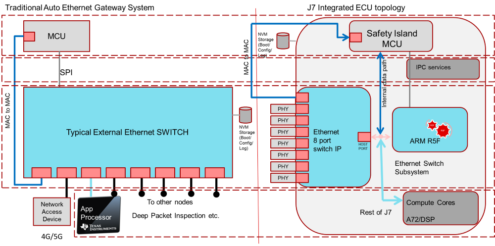
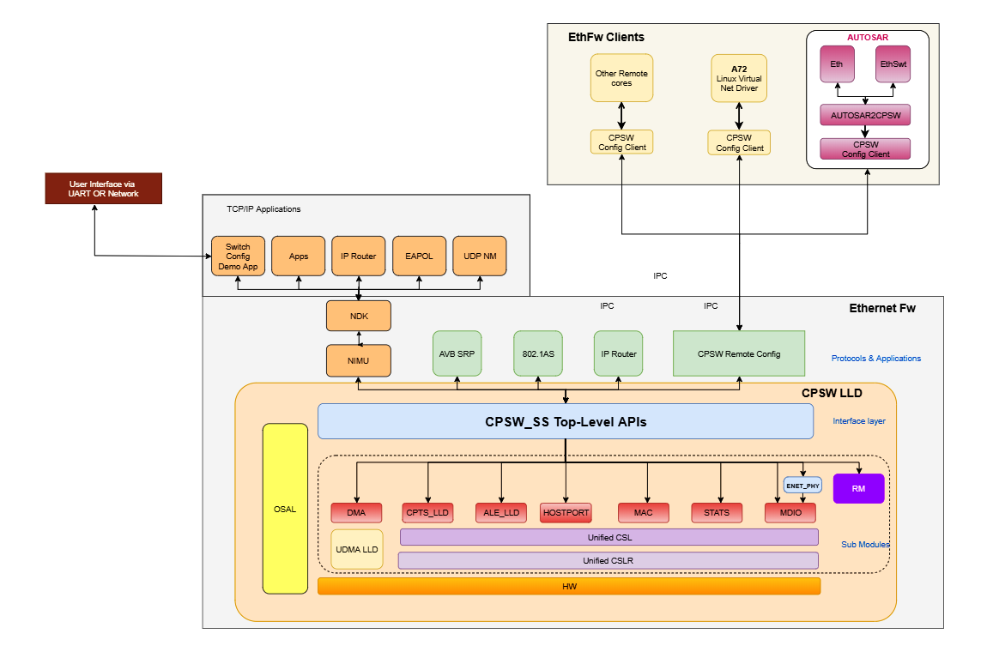

|
Ethernet Firmware
|
|
Ethernet Firmware
|
SoC's, such as J721E, integrate an Ethernet Switch as an chip-in-chip. The combined features of SOC and Switch IP (CPSW9G) can allow Ethernet switch to function continuously enabling unaffected switching on external ports regardless of the state of the rest of the device.

The Ethernet Firmware is TI RTOS based application for configuration of Ethernet switch. The package contains remote configuration server, resource management library, switch resident protocols, proxy layers to handle local and remote API calls and demonstration applications (EthFw Demos). The switch software uses PDK CPSW and other drivers for respective IP configuration. Its is expected to be hosted on Cortex R5F in Main Domain.

| Revision | Date | Author | Description |
|---|---|---|---|
| 0.1 | 02 Apr 2019 | Prasad J, Misael Lopez | Added as per 0.8 Docs review meeting |
 1.8.13
1.8.13